- To start using the add-on, select the animation you are interested in in the Axis Studio program. Export it in .csv format (Fig. 1 and Fig. 2).
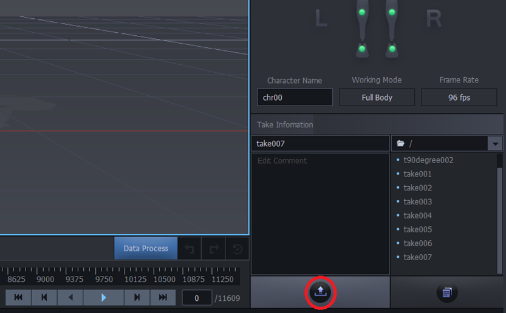
Figure 1 – Click on the "Export" button
- Supported export types: FBX Export (*.fbx), Calculation Data (*.csv) and Biovision BVH (*.bvh). It is important to consider the export settings (Fig. 2, Fig. 3, Fig. 4).

Figure 2 – Export type FBX Export (*.fbx)
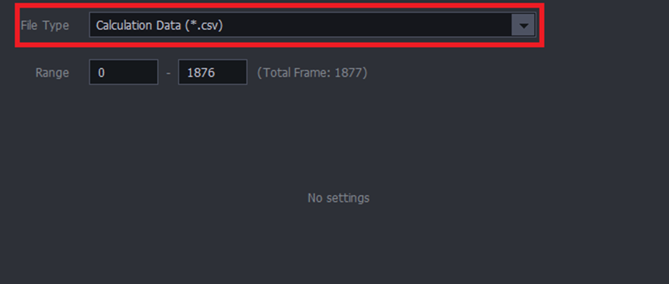
Figure 3 – Export type Calculation Data (*.csv)
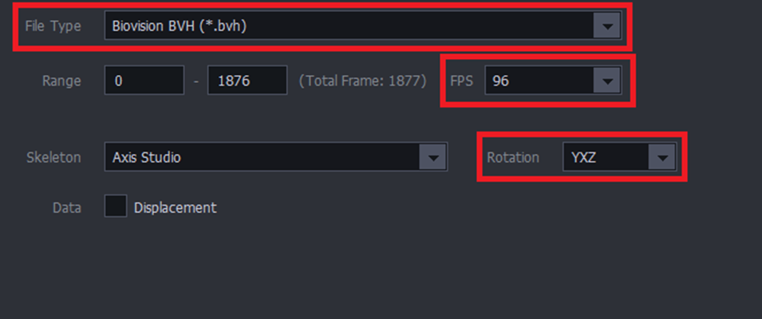
Figure 4 – Export type Biovision BVH (*.bvh)
Launch the R-Pro software.
- To start working, load the required layout.
- The layout must contain the component "Operator MoCap (Name)", which can be found in the electronic catalog "PM MoCap" (Fig. 5).
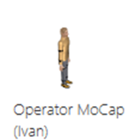
Figure 5 – MoCap operator in the electronic catalog
- In the "Program" tab, find the MoCap section, select the MoCap tool (Fig. 6, Fig. 7).
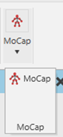
Figure 6 – New "MoCap" section in the "Program" tab
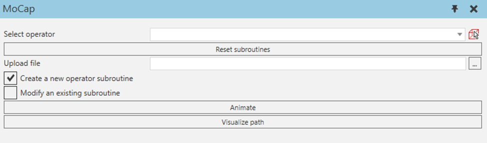
Figure 7 – Appearance of the instrument
- Next, you need to select an operator on the layout. You can select it using the drop-down list, or select it from the layout.
- The "Reset subroutines" button sets the default operator subroutines. Note that you must first select an operator.
- Then you need to select the CSV file, which is the collected data from the motion capture suit.
- The "Create a new operator subroutine" checkbox helps to create a new subroutine after pressing the "Animate" button. This subroutine can be called in the process executor. Calling the subroutine that starts the animation of a person occurs by creating the "Execute Robot Procedure" expression. It is necessary to correctly specify the program name in quotation marks, and also select the operator component that will perform the action (Fig. 8). For this case, there is no need to connect the operator to the human transport controller.
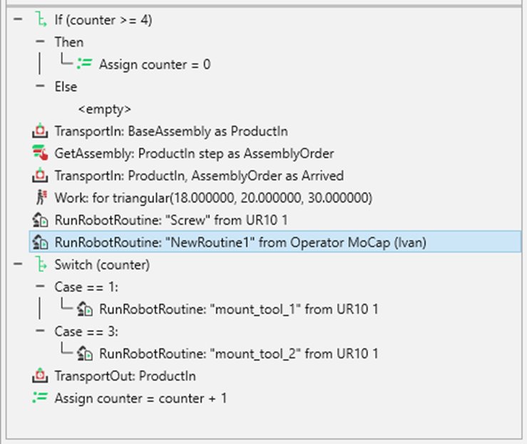
Figure 8 – Example of a process executor
- If you uncheck the "Create a new operator subroutine" box and click the "Animate" button, the program will be loaded into the main operator subroutine (Main) and it will play the animation immediately after the simulation starts. For this case, there is no need to connect the operator to the human transport controller.
- In order to change the existing operator animation (for example, walking or working), there is a checkbox "Modify an existing subroutine" and a drop-down list of existing subroutines (Fig. 9). After clicking the "Animate" button, the selected subroutine changes. If this subroutine is basic ("Default_*" or "ForkLift_*"), the animation is loaded as a switch case construction (Fig. 10). The operator will play this animation once after the start of the simulation for a certain action (for example, walking or working). Thus, it is possible to sequentially load the necessary operator animations to simulate real production. It is recommended to break each action into a separate stage and load the animations sequentially.
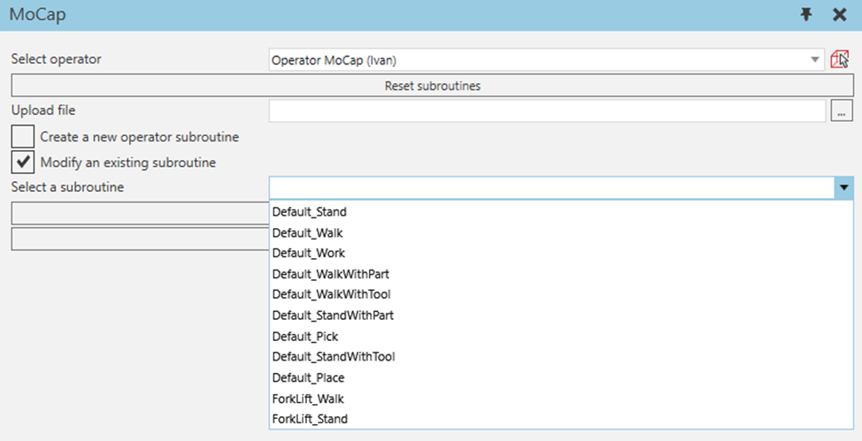
Figure 9 – Select to change an existing subroutine
- If the animation was loaded in the wrong order, it is possible to change the order in the case construct (starts from 0) (Fig. 10). If you loaded the last animation of a person and want the animations to be played again at some point, you need to change the expression in the last animation of the cycle from "Assign ActionCounter = ActionCounter + 1" to "Assign ActionCounter = 0" (Fig. 10). The actual speed of the operator when reading data (total distance traveled / data recording time) is also taken into account (Fig. 10). If you need to change the basic MoveSpeed of the operator, you must first reset the routines, find the Python script "Modeling" -> "MoCap Operator" -> "Behaviors" -> "MoveSpeedUpdate" and set the initial speed (by default start_speed = 1200) in the script and in the "Component Properties" of the operator.
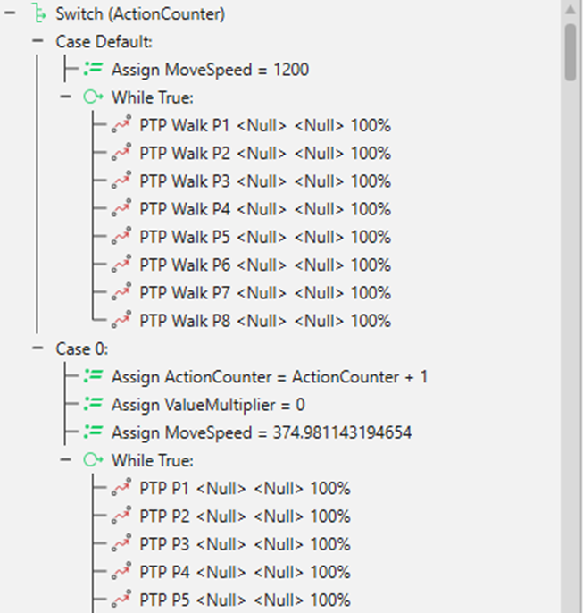
Figure 10 – Loaded animation
- It is possible to change the loaded animation. The animation is loaded into the operator subroutine by creating point-to-point (PTP) movements (Fig. 10). Each second of animation corresponds to 24 movements. Unnecessary movements can be deleted. To slow down or speed up the animation, change the value of the "CycleTime" property of the PTP (to change the properties of several expressions, you can select them using the combination shift + left mouse button or ctrl + left mouse button), by default 0.041(6) seconds (0.0416666666666667).
- The operator's distance traveled is calculated once per second. To prevent small human movements from being counted as distance traveled, the operator has the MoveThreshold property. By default, one movement must exceed 15 mm in 1/24 second (animations correspond to 24 PTP) so that it is counted and taken into account in the TravelDistance calculation.
- The "Visualize path" button (Fig. 7) starts the simulation, and when the simulation is reset, it plots the Spaghetti diagram of the selected MoCap operator. The operator's path is drawn as a new component - a broken line.
- If you look at the "Component Properties" of the operator, you can find the value of the distance traveled, as well as the current state of the person at the bottom (Fig. 11). In order to accurately convey the state of the person, it is advisable to edit the created subroutine (or Main) in the "Program" tab by creating the "Set state" operator (Fig. 12).
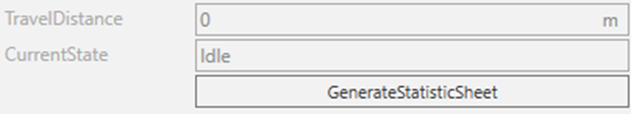
Figure 11 – "Component Properties" of the MoCap operator
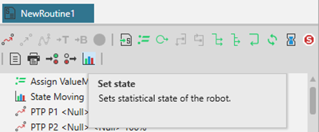
Figure 12 – Operator "Set state"
- The "GenerateStatisticSheet" button creates new statistics for this operator, which can be found under "Home" - "Statistics". Then you can edit and use the statistics for your purposes.